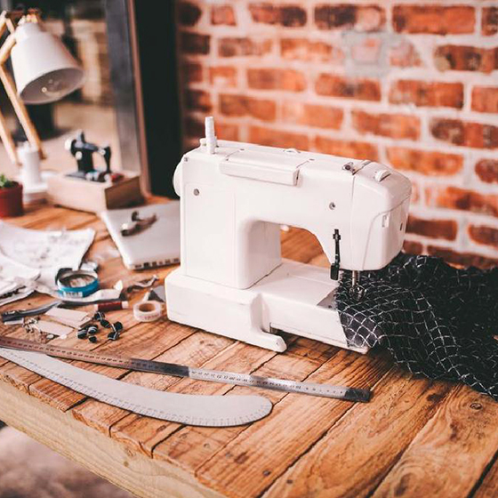

For so may reasons, sewing became a new go-to hobby. It is one of the most rewarding hobbies and it’s quite affordable, too. Thus, if you’re interested about sewing, stick around and learn why you should learn how to sew.
People who are skillful in sewing are very lucky. Why? Today’s generation are going crazy with expensive clothes. Some, if fortunate enough, pay so much for designers and tailors just to make them one-of-a-kind clothing — most Hollywood celebrities can afford this.
If you’re trying to imitate them, that cannot be considered a good idea unless you’re a daughter or son of a billionaire. However, if you know how to sew, you can create your own clothing that is not far from what you like to copy from your favorite celebrities — and of course, without spending too much.
One of the reasons to learn how to sew is that it can help you discover the talent in you. You can improve your creativity and sewing skills to make useful items you can be proud of. Once you know how to sew pieces of clothing from fabric, you will have the freedom to customize your outfits. You can also choose the best fabric for your clothing.
Love skirts? Imagine how exciting it is to make your own fashion line of skirts: pencil skirt, tulle skirt, or any simple skitr! You’re free to design your clothing.
Another advantage of being able to sew your own clothes is SAVINGS! Instead of shopping, you can transform your old clothes into something new and stylish. Just check on the internet and it will give you loads of tutorials on upcycling old clothing.
Plus, you can also salvage your favorite apparel in case it needed some repair or you just wanted to jazz it up according to trends. You can upgrade your look without spending much! Just incorporate expensive-looking accessories and studs to achieve the style you want.